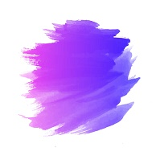

Sobre a Lazuli
A Lazuli desenvolve produtos e serviços de alta qualidade, além de tecnologias que auxiliam consumidores e pintores a transformar casas, escritórios, prédios históricos e todo tipo de construção com uma simples pintura.
Pensando na praticidade, bem estar do cliente, e priciplamnte o cuidado com o meio ambiente, a Lazulli desenvolveu uma calculardora que fara o calculo
de quantas latas serão necessarias para as pinturas em sua casa, escritorio, etc.
Calculadora.
Sua paleta é a mais completa do mercado, com 2.016 tons – todos com nomes, o que facilita a memorização. A expertise na área resultou ainda na criação de ferramentas que ajudam na escolha e na combinação de tonalidades.
Nossa missão é: Levar cor para a vida das pessoas.